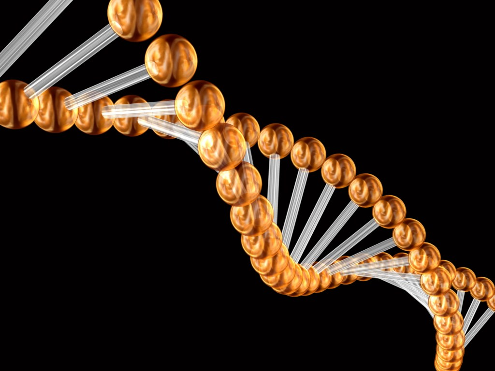

Anatomia

Anatomia (ana=prin si tomein=taiere) este o ramura a biologiei morfologice care studiaza forma si structura organismelor, ca si ale partilor lor componente. In mod curent, termenul are mai ales o conotatie medicala desi metodele anatomiei sunt aplicabile pentru orice organism pluricelular (inclusiv animale, plante, unele ciuperci). Studiul anatomiei este strans legat de cel al fiziologiei, iar cu timpul (mai ales in secolul XX) din anatomie s-au desprins discipline complementare: histologia, embriologia , biologia celulara.